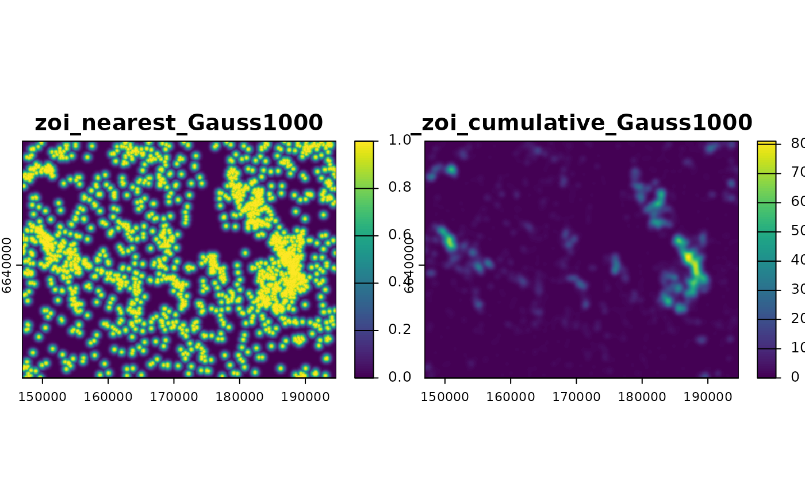
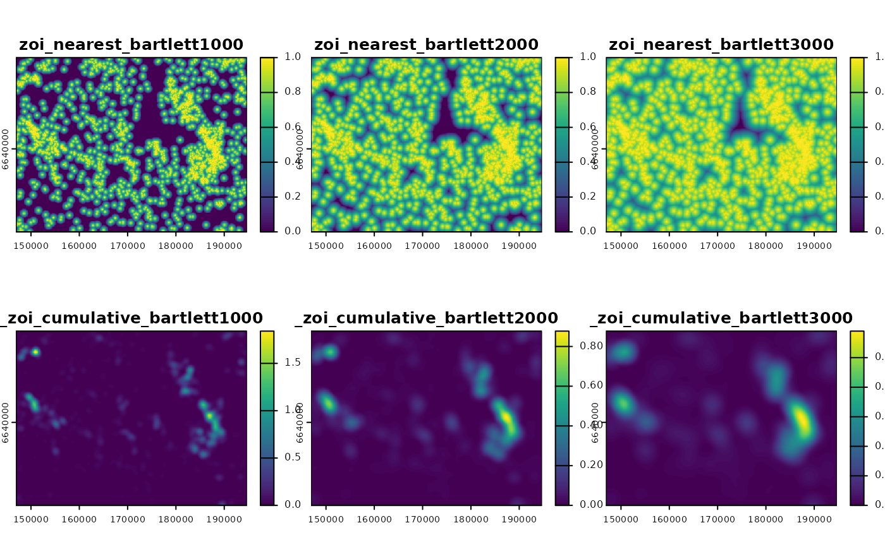

Calculates the zone of influence from the nearest feature and the cumulative zone of influence of multiple features
Source:R/calc_zoi.R
calc_zoi.RdThis function takes in a raster with locations of infrastructure and calculates
either (1) a raster representing the Zone of Influence (ZOI) of the neareast feature or (2)
a raster representing the cumulative Zone of Influence of multiple features, or both.
This function takes in a raster with locations or counts of
infrastructure and calculates a raster (or set of rasters, in case there is
more the one value for radius) representing either of two zone of influence (ZOI)
metrics for type of infrastructure: (1) the ZOI of the neareast feature, (2) the cumulative
ZOI of multiple features, or (3) both ZOI metrics. Zones of influence
are defined by functions that decay with the distance from each
infrastructure and their rate of decay is controlled by the ZOI radius
(radius), which defines how far the influence of an infrastructure
feature goes. To see more information on each ZOI metric, see
calc_zoi_nearest() and calc_zoi_cumulative().
Arguments
- x
[RasterLayer,SpatRaster]
Raster representing locations of features, preferentially with positive value where the features are located and either 0 or NA elsewhere. Alternatively,xmight be a binary (dummy) spatial variable representing the presence of linear or area features, with 0 or NA/no-data as background.xcan be aRasterLayerfrom raster package or a SpatRaster from terra package. Ifwhere = "GRASS",xmust be a string corresponding to the name of the input map within a GRASS GIS location and mapset.The default parameters assume that the input
xpresents zeros as the background value, where infrastructure or disturbance are absent. Therefore, to deal correctly with the computation of both ZOI metrics, by default we set the parameterzeroAsNA = TRUE. If, in contrast, the input mapxhasNAas background values, the parameterzeroAsNAshould be set toFALSE.- radius
[numeric(1)]
Radius of the zone of influence (ZOI), the distance at which the ZOI vanishes or goes below a given minimum limit valuezoi_limit. Seezoi_functions()for details. It can be a single value or a vector of values, in which case several ZOI layers (one for each radius) are created.- type
[character(1)="circle"]{"circle", "Gauss", "rectangle", "exp_decay", "bartlett", "threshold", "step"}
Shape of the zone of influence. Seecalc_zoi_nearest()for details.- zoi_metric
[character(1)="all"]{"all", "nearest", "cumulative"}
Which metric of zone of influence should be computed. Either"all","nearest", or"cumulative".- output_type
[character(1)="cumulative_zoi"]{"cumulative_zoi", "density"}
For the cumulative ZOI, ifoutput_type = "cumulative_zoi"(default), the ZOI weight matrix not not normalized, i.e. the maximum value of the weight matrix at the central pixel value is always 1. This means the values of the input map are summed (considering a decay with distance within the neighborhood) and the output map presents values higher than 1. Ifoutput_type = "density", the weight matrix is normalized before the filtering process, leading to values in the outmap map generally lower than 1. This parameter is ignored for the ZOI of the nearest feature.
Value
If the calculations are performed in R (where = "R"),
a RasterLayer/RasterStack or SpatRaster object
(according to the input x map)
with the either the zone of influence of the nearest feature
(if zoi_metric = "nearest"), the cumulative zone of influence of multiple
features (if zoi_metric = "cumulative"), or both metrics
(if zoi_metric = "all", the default).
If the computation is done in GRASS GIS, the output is the name of
the output raster map(s) within the GRASS GIS location and mapset of the
current session. The user can retrieve these maps to R using
rgrass::read_RAST() or export them outside GRASS using the
r.out.gdal module, for instance.
See also
Fore more details on each of the ZOI metrics,
other function parameters, and their specific details, see
calc_zoi_nearest() and calc_zoi_cumulative().
Examples
library(terra)
#> terra 1.7.29
# Load raster data
f <- system.file("raster/sample_area_cabins.tif", package = "oneimpact")
cabins <- terra::rast(f)
#---
# check background values
terra::freq(cabins) ## No zeros, background is NA
#> layer value count
#> 1 1 1 4640
# compute both Zoi metrics with Gaussian decay, radius = 1000 m
# since the background is NA, we use zeroAsNA = FALSE
zoi_metrics <- calc_zoi(cabins,
radius = 1000,
type = "Gauss",
zeroAsNA = FALSE)
# check
zoi_metrics
#> class : SpatRaster
#> dimensions : 361, 478, 2 (nrow, ncol, nlyr)
#> resolution : 100, 100 (x, y)
#> extent : 146900, 194700, 6622800, 6658900 (xmin, xmax, ymin, ymax)
#> coord. ref. : +proj=utm +zone=33 +ellps=GRS80 +units=m +no_defs
#> source(s) : memory
#> names : zoi_nearest_Gauss1000, zoi_cumulative_Gauss1000
#> min values : 9.979886e-16, 0.00000
#> max values : 1.000000e+00, 81.11139
# plot
plot(zoi_metrics)

#-------
# Load raster data
f <- system.file("raster/sample_area_cabins_count.tif", package = "oneimpact")
cabins_count <- terra::rast(f)
# check background values
terra::freq(cabins_count) ## Places with no infrastructure have value zero
#> layer value count
#> 1 1 0 167918
#> 2 1 1 3239
#> 3 1 2 885
#> 4 1 3 315
#> 5 1 4 122
#> 6 1 5 51
#> 7 1 6 20
#> 8 1 7 6
#> 9 1 8 2
# compute both Zoi metrics with linear decay, varying radius from 1000 m to 3000 m
# since the background is zero, we use zeroAsNA = TRUE
zoi_metrics2 <- calc_zoi(cabins_count,
radius = c(1000, 2000, 3000),
type = "bartlett",
zeroAsNA = TRUE,
output_type = "density")
# check
zoi_metrics2
#> class : SpatRaster
#> dimensions : 361, 478, 6 (nrow, ncol, nlyr)
#> resolution : 100, 100 (x, y)
#> extent : 146900, 194700, 6622800, 6658900 (xmin, xmax, ymin, ymax)
#> coord. ref. : +proj=utm +zone=33 +ellps=GRS80 +units=m +no_defs
#> source(s) : memory
#> names : zoi_n~t1000, zoi_n~t2000, zoi_n~t3000, zoi_c~t1000, zoi_c~t2000, zoi_c~t3000
#> min values : 0, 0, 0, 0.000000, 0.0000000, 0.000000
#> max values : 1, 1, 1, 1.840805, 0.8772904, 0.589878
# plot
plot(zoi_metrics2)
